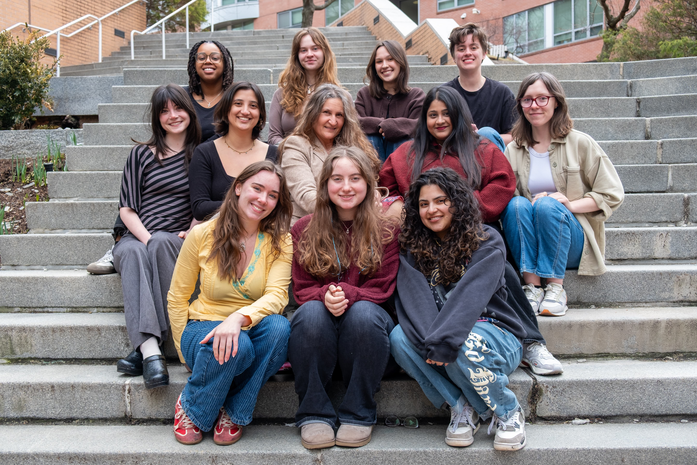
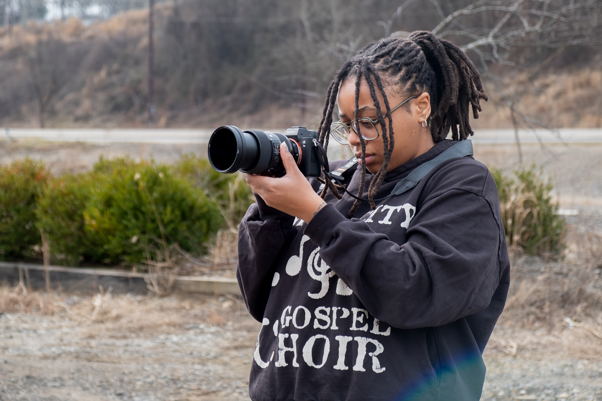
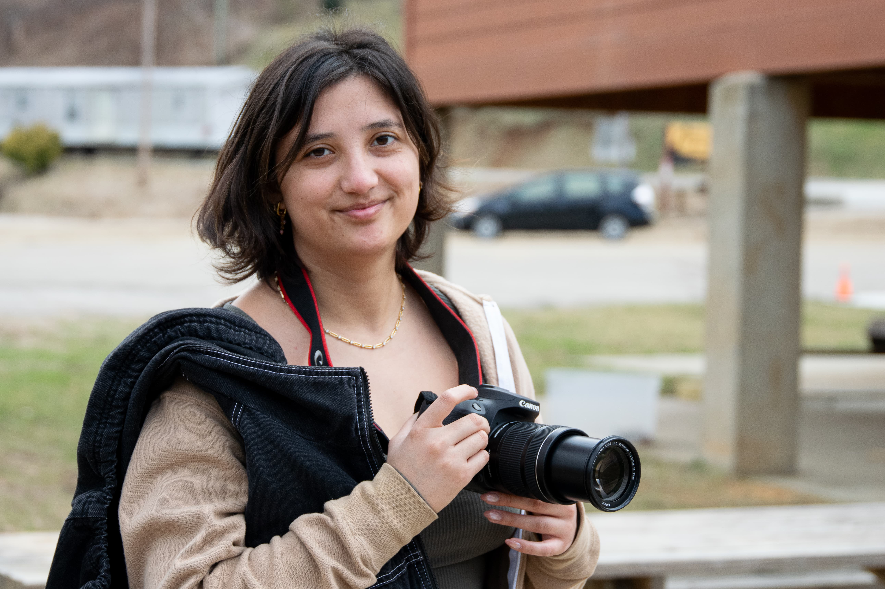
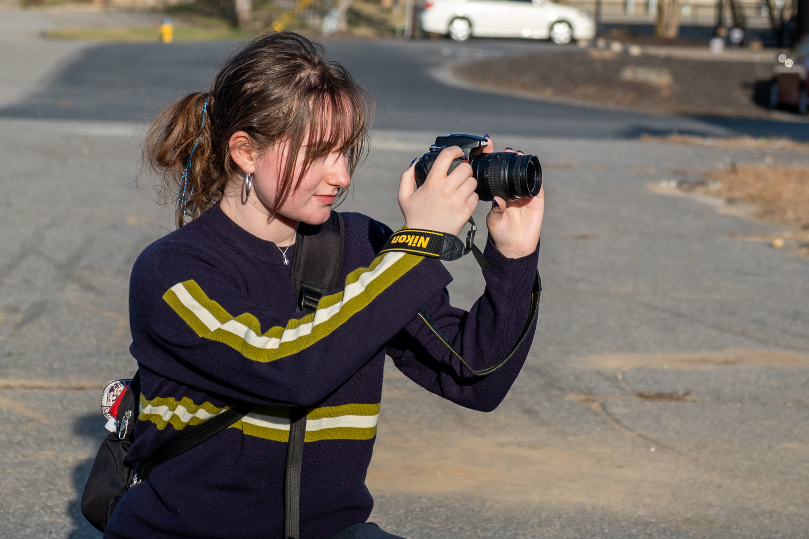
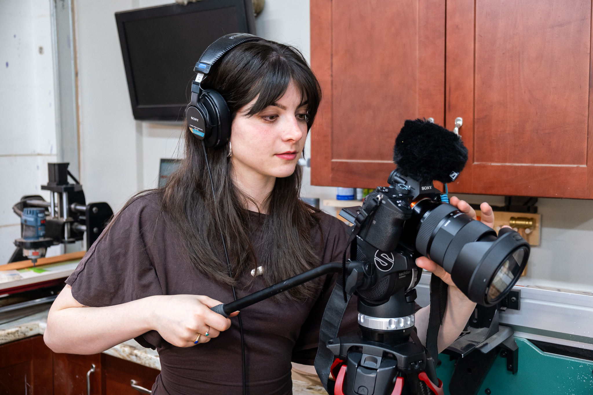
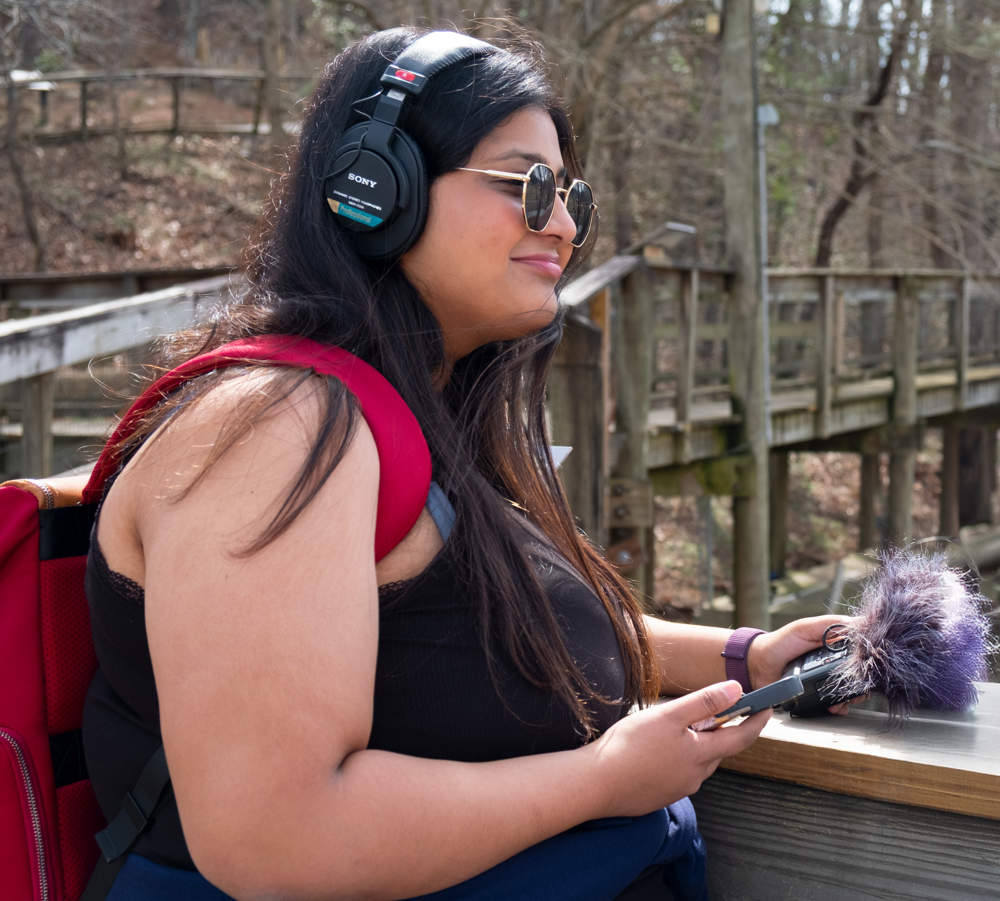
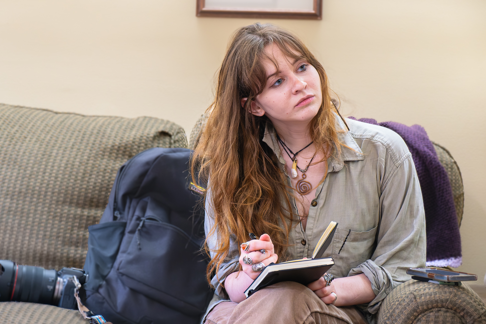
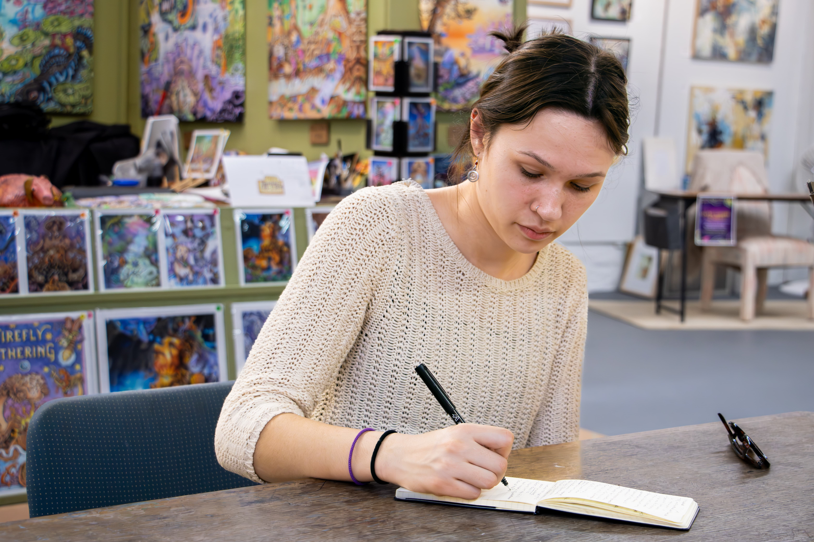
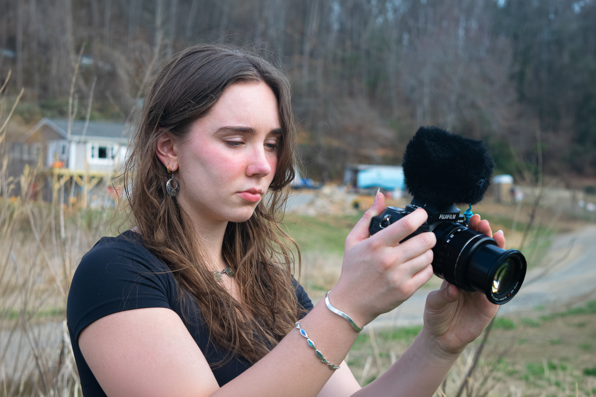

About
The Project
Caught in the Current is a multimedia journalism project led by Professor Carlene Hempel and funded by the College of Arts, Media and Design. From January through May 2026, 11 journalism students endeavored to tell the story of a community that experienced a devastating weather event and 18 months later still suffers its effects. What happens when the nation's attention turns to other crises? Through in-depth articles, video/audio reports and photojournalism, our team covered stories of resilience and resignation. This is their work.
Please send comments or questions to Professor Hempel (c.hempel@northeastern.edu). We’d love to hear what you think.

Back row, left to right: Azariah Baker, Beck Orten, Grace Sawin, Hayes Botnick. Middle row, left to right: Mia Filler, Ali Caudle, Professor Carlene Hempel, Namira Haris, Claire Ogden. Front row, left to right: Sydney Woogerd, Eva Ciolek Passeri, Valentina Gutierrez.
Meet the Team

Azariah Baker
Audio/Video Editor
Azariah Baker is a graduate student studying media advocacy at Northeastern University. After earning a bachelor's degree in music industry, she continued her education with concentrations on intellectual properties and advocacy for the rights of creatives from underrepresented communities. She has experience self developing a curriculum for young creatives centered around intellectual properties and copyrights. She is currently working on establishing a music supervision company that provides small independent creatives with low production budgets and free music for their visual media and art. Azariah served as our video and audio producer.

Hayes Botnick
Dataviz Reporter
Hayes Botnick is a graduate student at Northeastern University studying media innovation and data communication. Hayes obtained his bachelor's degree in English from Skidmore College in 2023. He is an experienced video editor and sound mixer, having worked on several feature films and independent projects throughout New York, New Jersey and Boston. Currently, he leads a course in the fundamentals of video editing with Adobe Premiere at Northeastern and served as a lead video advisor for the team.

Alina Caudle
Social Media Manager
Ali Caudle is a senior at Northeastern University pursuing a bachelor's degree in journalism with minors in law and public policy and women's, gender and sexuality studies. Ali has worked as a digital media assistant at the Massachusetts Attorney General's Office, a communications assistant at My Life My Choice and an editor for The Huntington News. Her reporting interests include legal issues and U.S. politics, with particular emphasis on state and local governance. Raised in San Francisco, she has lived in Montana, and is now based in Boston with her puppy, Willow. Ali served as our social media manager.

Eva Ciolek Passeri
Database Editor
Eva Ciolek Passeri is a second-year pursuing a degree in journalism and political science with a minor in sociology. She is interested in social justice, history, pop culture, environment and science communication. She serves as the podcast and archival team director for WRBB, the school's radio station, where she also hosts her own show. She writes and photographs for The Huntington News, serves as a content creator and outreach leader for the SEDS Astronomy Club, and is a member of the pre-law fraternity Phi Alpha Delta. Eva served as our social media graphic designer and led our expert's database.

Mia Filler
Dataviz Reporter
Mia Filler is a senior at Northeastern University pursuing a bachelor's degree in journalism and interaction design. She brings experience across social media strategy, UX/UI design, writing and video production. She completed two co-ops with the City of Cambridge in the Communications Office, where she produced public-facing content to communicate city values, initiatives and services to Cambridge residents. At Northeastern, she has written for The Huntington News and Tastemakers Magazine and served as a web and data visualization designer for Scout. Mia served as our data visualization editor.

Valentina Gutierrez
Media Partner
Valentina Gutierrez is a fourth-year English and journalism combined major. She's the president of Artistry Magazine, a journalistic arts and culture publication at Northeastern University. She's also editor-in-chief of Northeastern's Spectrum Literary Magazine and creative committee co-lead of Spectrum's Creative Committee. In her free time, she enjoys reading, writing, thrifting her next fashion find and being active. Valentina managed our media partnership and public relations team.

Namira Haris
Webmaster
Namira Haris is a graduate student at Northeastern University studying media innovation and data communication. She focuses on multimedia and data-driven storytelling, creating interactive web projects, videos, podcasts and visual investigations on social equity, technology and environmental impact. Namira is the assistant editor at Storybench and has experience in digital reporting, data tools and long-form multimedia journalism. She has also worked in editorial, digital content and strategic communications roles where she focused on analytics strategy. Namira served as the webmaster for our project.

Claire Ogden
Logistics Coordinator
Claire Ogden is a graduate student in the School of Journalism at Northeastern as well as a freelance journalist, arts writer and nonfiction film producer based in Somerville. She works as the communications specialist for Northeastern's Center for Transformative Media and the Center for the Arts. In her free time, she loves running, rock climbing and watching documentaries. Claire served as our logistics coordinator.

Rebecca Orten
Chief Illustrator
Beck Orten is a third-year student pursuing a bachelor's degree in journalism and cultural anthropology with a minor in Arabic. Beck's writing and photography have been featured in Northeastern's Huntington News, the Addison Independent, VT Digger, Blue Marble Review and more. She is passionate about global perspectives and international politics, having traveled to Morocco, Palestine, Jordan and Turkey to volunteer, photograph and report. She enjoys both traditional art and graphic design. Beck served as the chief illustrator for our project.

Grace Sawin
Chief Copy Editor
Grace Sawin is a senior at Northeastern studying journalism and environmental science. She is passionate about environmental justice and public service and hopes to amplify community voices through her writing. She has previously completed two co-ops as a press assistant in the Office of Boston Mayor Michelle Wu and as a communications assistant at MIT's Climate Change Engagement Program. At Northeastern, she is the editor-in-chief of Woof Magazine and the media director at WRBB 104.9 FM. Grace served as our chief copy editor and manager of classroom operations.

Sydney Woogerd
Photo Editor
Sydney is a second-year journalism and international affairs student with a focus on multimedia storytelling. She serves as co-photo director for The Avenue Magazine, a student-led fashion publication, where she directs visual strategy and creates editorial content. She has also contributed to The Huntington News and Artistry Magazine as a writer and photographer documenting community stories across Boston. In her free time, she enjoys yoga, baking and photography. Sydney served as our photo editor.
As part of our special report, Caught in the Current has partnered with DCReport.org, a not-for-profit news service published by the Next Echo Foundation. The organization, which focuses on the policies, politics and events that affect our everyday lives, allows our work in Asheville to reach a national audience.
A Special Thanks To
- Jonathan Kaufman, director, School of Journalism
- R. Benjamin Knapp, dean, College of Arts, Media and Design
- Andrea Raynor, associate dean, College of Arts, Media and Design
- Katherine Calzada, assistant dean, faculty development, College of Arts, Media and Design
- Lisa Thalhamer, teaching assistant
- Luis Brens, media services manager, College of Arts, Media and Design
- Susan Conover, academic coordinator, School of Journalism
- Melissa Newton, assistant director, Faculty-Led Programs, Global Experience Office
- Professor Jody Santos, School of Journalism, who advised our video reporters
- Professor Jeb Sharp, School of Journalism, who advised our audio reporters
- Professor Matt Carroll, School of Journalism, who advised on data visualizations
- Professor Dan Zedek, School of Journalism, who advised on web solutions
- Carissa Pfeiffer, librarian, Buncombe County Special Collections
Our Generous Financial Backers
- The Joe Thomas Explore the World Fund
- Professor John Wihbey and the XXXX Fund
- Adam Leipzig, Next Echo Foundation
- David Cay Johnson, DCReport.org